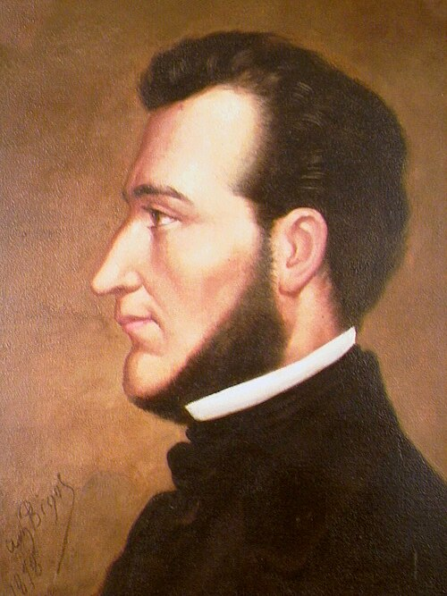
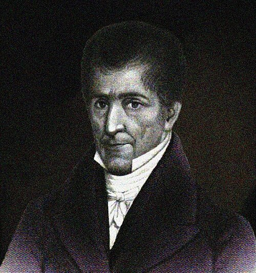
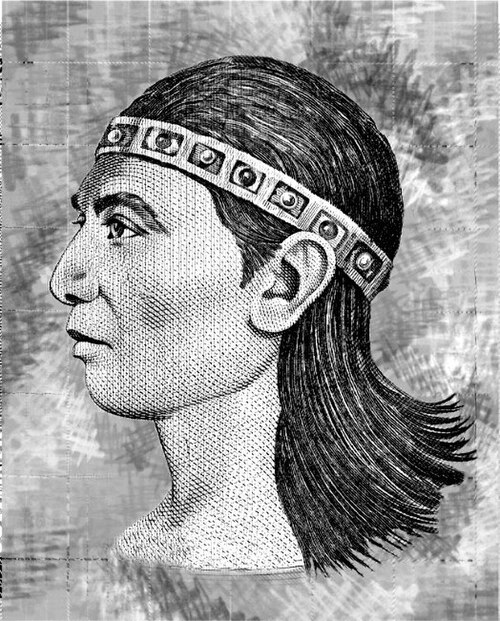
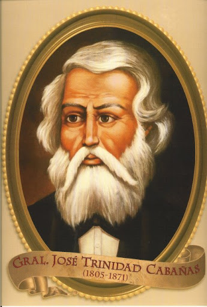
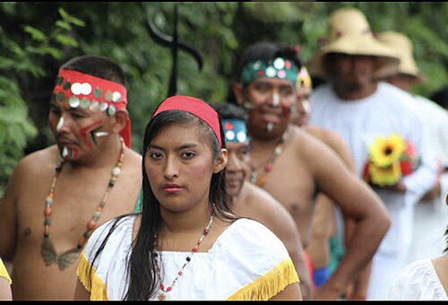
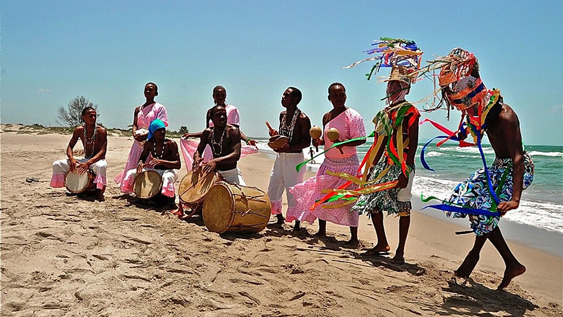
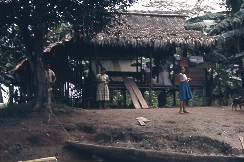
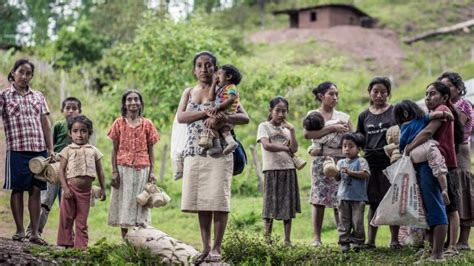
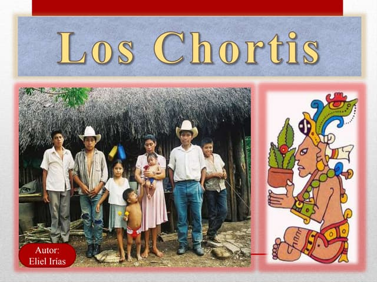

Sección dedicada a la identidad hondureña: semblanza histórica sobre el pensamiento unionista de
Francisco Morazán y los próceres patrios, reconocimiento de las etnias vivas
¿Quien fue Francisco Morazan?

Imagen de Francisco Morazan
Francisco Morazan, fue un militar y político hondureño que gobernó a la República Federal
Centroamericana durante el turbulento período de 1830 a 1839.
Saltó a la fama luego de su victoria en la legendaria batalla de La Trinidad el 11 de noviembre de
1827. Desde entonces, y hasta su derrota en Guatemala en 1840, Morazán dominó la escena política y
militar de Centroamérica.
Jose Cecilio del Valle

Imagen de Jose Cecilio del Valle.
Jose Cecilio del Valle fue un filósofo, político, abogado y periodista hondureño. Realizó sus
estudios en la Real y Pontificia Universidad de San Carlos Borromeo. Su espíritu investigador
penetró en los estrados del conocimiento y su poderosa inteligencia lo llevó a cristalizar
enseñanza, pensamiento y ciencia. Escribió sobre matemáticas, filosofía, geografía, historia,
botánica, mineralogía y derecho.
Lempira

Imagen del cacique lempira
Aunque su nombre fuese "Erandique" (según la "Probanza de Méritos" redactada por Rodrigo Ruíz), fue
un capitán de guerra y líder de los lencas que luchó contra los españoles durante la década de 1530.
En los documentos escritos durante la conquista española, es mencionado con el nombre de El Lempira.
Jose Trinidad Cabañas

Imagen de José Trinidad Francisco Cabañas
José Trinidad Francisco Cabañas fue un militar con el grado de General de División y político
hondureño, electo como Presidente constitucional del Estado de Honduras en el periodo de 1852 a
1855. Fue un defensor de las ideas unionistas de Centroamérica.
Etnias
Lencas

Lencas
Los lencas son un grupo étnico mesoamericano, que hablan las llamadas lenguas lencas y que ocupan
parte del territorio de Honduras y El Salvador desde tiempos precolombinos.
Garífunas

Garifunas
Los garífunas o garínagu son un pueblo descendiente de africanos y pueblos originarios caribes y
arahuacos de ciertas regiones del Caribe, que principalmente reside en Honduras, Belice y Guatemala,
donde hoy su cultura es muy celebrada. También se les conoce como garinagu, indios negros, caribes
negros o Black Caribs.
Misquitos

Misquitos o Miskitos
Los misquitos o miskitos son un grupo étnico indígena de Centroamérica, cuyo idioma nativo pertenece
a la familia de lenguas misumalpas, que forman parte del grupo lenmichí de las lenguas
Macro-chibchas.Su territorio, que se extiende desde San Pedro sula en Honduras hasta más al sur del
Río Grande de Matagalpa en Nicaragua, permaneció aislado de la conquista española.
Tolupanes

Tolupanes
Los Tolupanes es un pueblo indígena localizado en la República de Honduras. Se les conoce también
como Xicaques y hablan diversas lenguas como el xicaque-tol. El término jicaque fue utilizado por
los colonizadores para referirse a los diferentes grupos rebeldes de Tegucigalpa y en los últimos
tiempos para la población jicaque-tol de El Palmar Buena Vista Santa Bárbara.
Chortís

Chortis
Los chortís son un pueblo indígena de Guatemala, El Salvador y Honduras, y descendientes de la
civilización maya cuyo centro cultural y político se situaba en Copán. En la actualidad hay
aproximadamente más de 60 000 chortís, alrededor de 52 000 especialmente en los municipios de
Camotan, Jocotan y Olopa en el departamento de Chiquimula, Guatemala, y 11 000 en los departamentos
de Copán, Ocotepeque, Cortés y Santa Bárbara en el noroeste de Honduras.